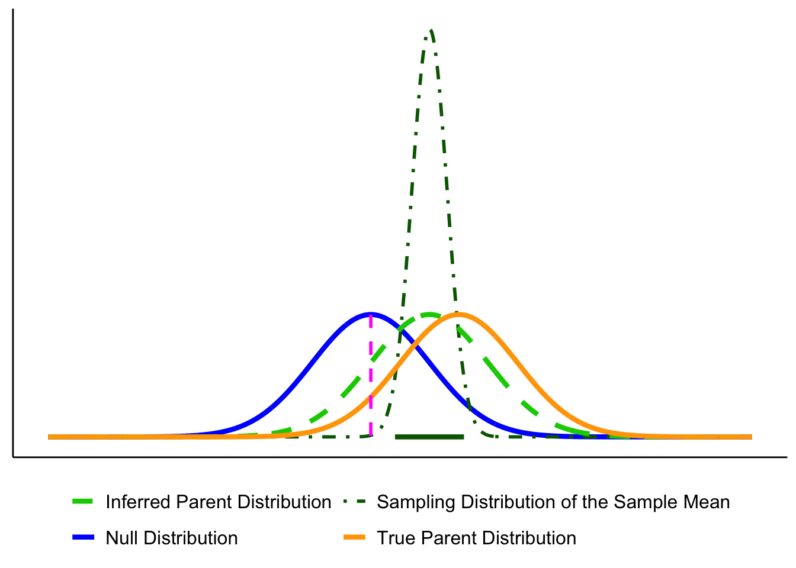
6 Hypothesis Testing
6.1 Hypothesis Testing - The Nuts & Bolts
Hypothesis testing helps us figure out if what we believe about a whole group is likely true, just by looking at a small part of it (a sample).
6.1.1 Clarifying Alpha, P-value, and Confidence Level
Before diving deep, let’s clear up some terms you’ll come across often.
Alpha (\(\alpha\))
Alpha (\(\alpha\)) is the significance level of a statistical test, and it quantifies the risk of committing a Type I error. A Type I error happens when we incorrectly reject a true null hypothesis. The standard value for alpha is often set at 0.05, implying a 5% chance of making a Type I error. In other words, we are willing to accept a 5% risk of concluding that a difference exists when there is no actual difference.
P-value
The p-value is another crucial concept in hypothesis testing. It represents the probability of observing the obtained results, or something more extreme, assuming that the null hypothesis is true. A small p-value (usually ≤ 0.05) suggests that the observed data is inconsistent with the null hypothesis, and thus, you have evidence to reject it.
Confidence Level
The confidence level is related but distinct from alpha and p-value. While alpha quantifies the risk of a Type I error, the confidence level indicates how confident we are in our statistical estimates. The confidence level is calculated as the complement of alpha:
\[ \text{Confidence Level} = 1 - \alpha \]
For example, if \(\alpha\) is 0.05, the confidence level would be (1 - 0.05 = 0.95) or 95%. This means we are 95% confident that our results fall within a specific range.
Bringing It All Together
- Alpha (\(\alpha\)): Risk of Type I error (usually 5%)
- P-value: Probability of observed data given the null is true
- Confidence Level: Confidence in the range of our estimates (usually 95%)
Grasping how these three terms connect and differ is key to making sense of the stats we’ll discuss.
6.1.2 The Steps of Hypothesis Testing Applied to an Example
Let’s say we want to know if the average pollution in a set of water samples is above the legal limit. Or if young deer in a region are, on average, healthy.
Step 1: Define Your Hypotheses: First, we need to define two hypotheses: the research hypothesis and the null hypothesis.
- Research Hypothesis (Ha): This is what we aim to support. Keep in mind, we can’t exactly “prove” Ha is correct, we can only say that H0 isn’t likely. It can take a few forms based on the question:
- Ha: average pollution > legal limit (pollution is too high)
- Ha: average pollution < legal limit (pollution is too low)
- Ha: average pollution ≠ legal limit (pollution is just different)
- Null Hypothesis (H0): This is the default or ‘no change’ scenario. It’s opposite to the research hypothesis.
- H0: average pollution ≤ legal limit (for the first Ha)
- H0: average pollution ≥ legal limit (for the second Ha)
- H0: average pollution = legal limit (for the third Ha)
Step 2: Choose Your Test Statistic: Based on the data, we’ll compute a test statistic. This number will help us decide which hypothesis seems more likely.
Step 3: Determine the Rejection Region: Before running the test, we decide on a rejection region. If our test statistic falls in this region, we’ll reject the null hypothesis.
Step 4: Check Assumptions: Before drawing conclusions, ensure that the test’s conditions and assumptions are satisfied.
Step 5: Draw Conclusions: Finally, based on the test statistic and the rejection region, decide whether to reject the null hypothesis.
6.1.3 Errors in Hypothesis Testing
Sometimes, even with the best methods, we make incorrect decisions.
Type I Error (\(\alpha\)): This happens when we mistakenly reject the true null hypothesis. Imagine sending an innocent person to jail. Typically, \(\alpha\) is set at 0.05 (5%).
Type II Error (\(\beta\)): Here, we mistakenly accept a false null hypothesis. Think of it as letting a guilty person go free.
| Decision | If the null hypothesis is True | If the null hypothesis is False |
|---|---|---|
| Reject H0 | Type I error (prob = \(\alpha\)) | Correct (prob = 1 - \(\beta\)) |
| Fail to reject H0 | Correct (prob = 1 - \(\alpha\)) | Type II error (prob = \(\beta\)) |
Key Takeaway: As \(\alpha\) gets smaller, \(\beta\) gets bigger, and vice-versa.
6.1.4 Deciphering Significance with P-values
The p-value is like a reality-check. It tells us how weird our results are if we assume the starting belief (null hypothesis) is spot on.
One-Tailed Test: The p-value shows the likelihood of observing an average as extreme as our sample’s if the null hypothesis stands.
Two-Tailed Test: This p-value represents the odds of spotting an average as different from the null value as our sample’s.
Rule of Thumb: If the p-value is less than \(\alpha\), we opt to reject the null hypothesis.
6.2 Graphical Review
6.2.1 Key Players in Hypothesis Testing Visualization
We define and visualize the core components essential to understanding the graphical representations of hypothesis testing:
Null Distribution - The hypothesized parent distribution under the assumption that the null hypothesis H0 is true.
Inferred Parent Distribution - The parent distribution inferred from our sample data. This is what we conceptualize as the distribution of Ha.
True Parent Distribution - The actual distribution from which our sample originates.
Sampling Distribution of the Sample Mean - Represents the distribution of sample means if we were to draw multiple samples from the parent distribution. This is crucial for making inferences about the Inferred Parent Distribution.
In the figure below, we’ve outlined the various elements crucial for hypothesis testing. Think of this section as a handy guide. Whenever you come across detailed graphs later in this chapter, you can circle back here for clarity.
For a two-tailed alternative, we are interested in the possibility that a sample comes from a parent distribution that may have a lower or higher location than the null.
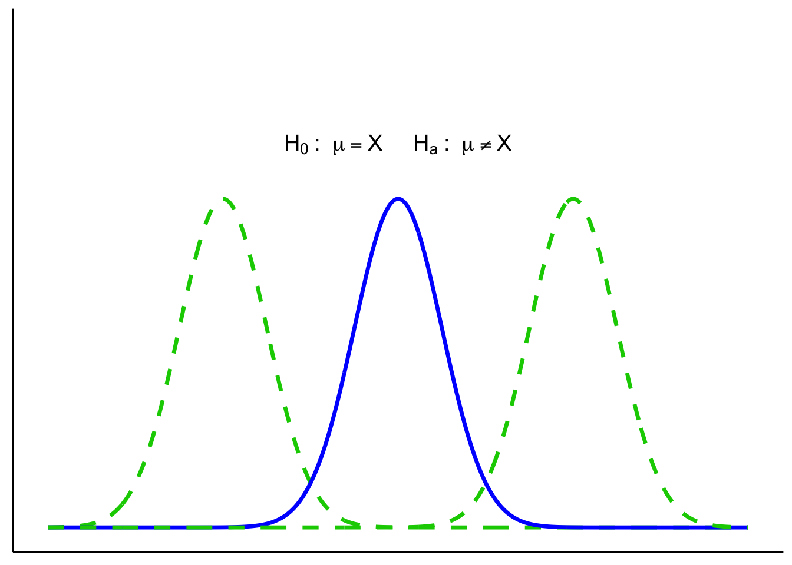
In a one-tailed t-test, we’re examining if our sample originates from a parent distribution that’s situated either below or above the null hypothesis. Unlike a two-tailed test, we’re only interested in one of these directions, not both.
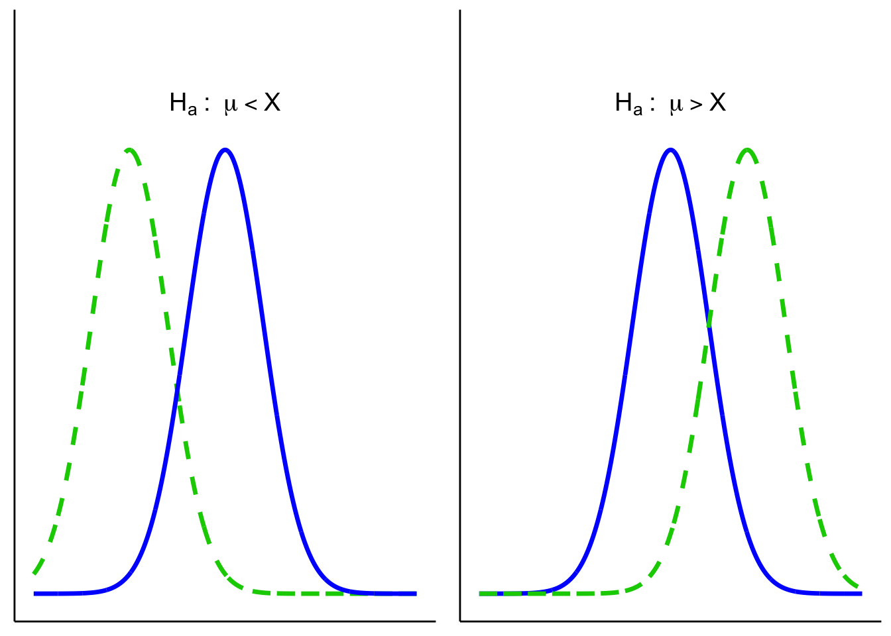
In a “perfect” world in which the null hypothesis is true, the sample’s parent distribution (solid, orange) is exactly the same parent distribution described by the null hypothesis (solid, blue).
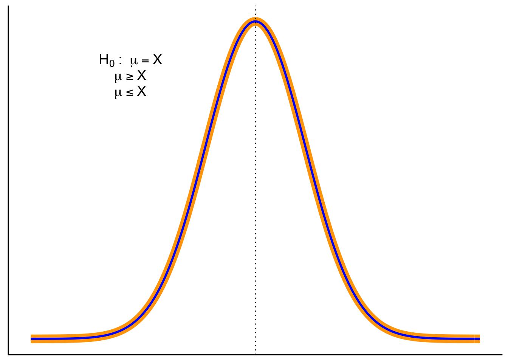
We never know the true parent distribution of the sample – we infer it from the sample. Here, the tall dash-dotted line shows the sampling distribution of the mean, from which we infer the parent distribution (green3, dashed).
In this even more perfect world, that parent distribution is the same as the parent distribution described by the null hypothesis and we have taken a perfectly representative sample, so all 3 curves line up perfectly on the same mean. The thick, short, flat dark green line is the confidence interval for the sample mean.
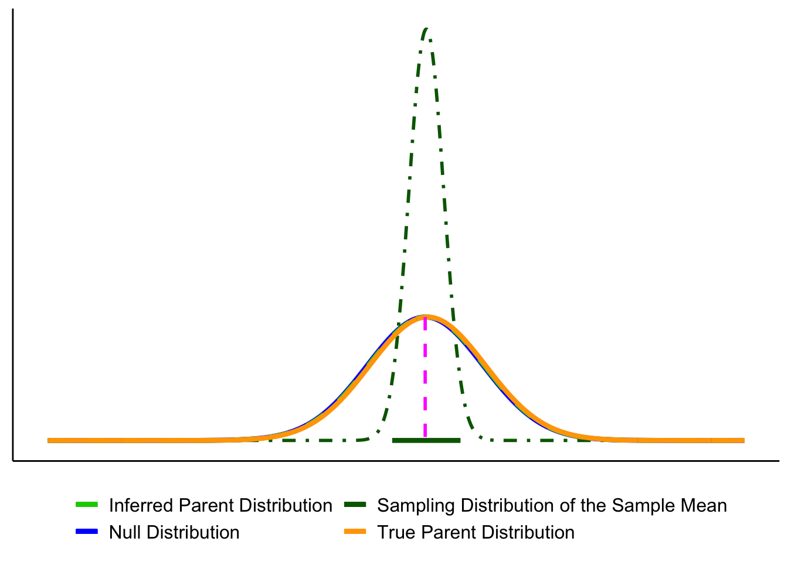
In an imperfect but convenient world, the sample is not a perfect representation of the parent population, but is fairly close. The sample mean is close to hypothesized mean, and (in the 2-tailed case) the confidence interval for the sample mean “catches” the mean of the null hypothesis (pink dashed line). A hypothesis test will correctly determine that there is not a significant difference between the sample mean and the mean of the null hypothesis.
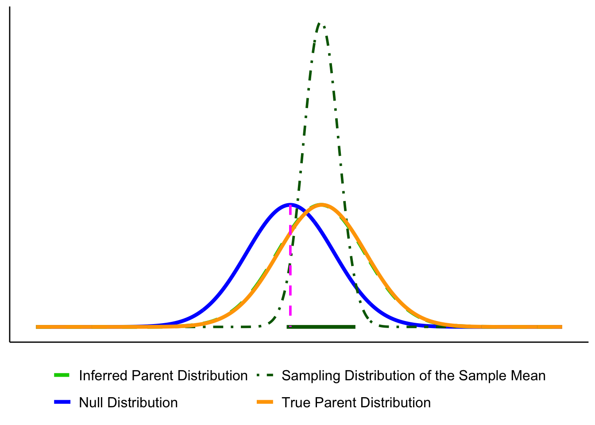
In an imperfect and inconvenient world, the random sample is, by chance, sufficiently imperfect that the apparent (inferred) parent distribution is far from the true parent distribution and (in the 2-tailed case) the confidence interval for the sample mean no longer “catches” the mean of the null hypothesis. A hypothesis test will now find a significant difference between the sample mean and the mean of the null hypothesis. This is a type I error.
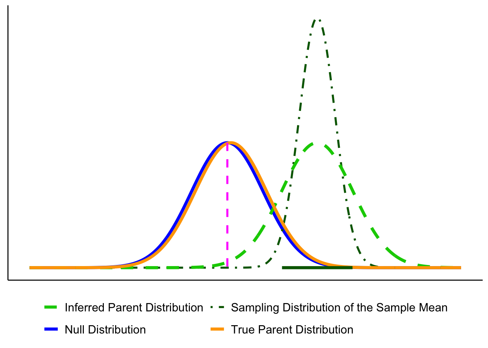
In another imperfect and inconvenient world, the sample (dashed dark green lines) really is drawn from the alternative distribution (the sample’s true parent distribution; orange), but is unrepresentative of its parent and similar to the null (solid blue line). The confidence interval (in the 2-tailed case) of the sample “catches” the mean of the null hypothesis although it is far from the mean of the true parent of the sample. A hypothesis test will find no significant difference between the sample mean and the mean of the null hypothesis. This is a type II error.
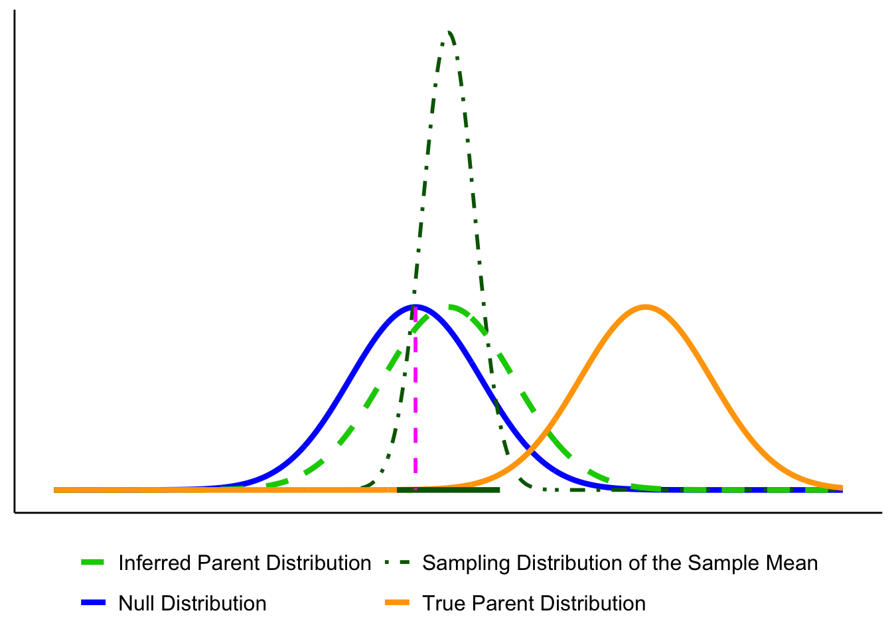
6.3 Graphical Review of Test Outcomes that are Not in Error
As you review hypothesis testing, it’s essential to remember that we don’t accept the null hypothesis. The possibility of a Type I error means our conclusion might be flawed. Instead of accepting the null hypothesis, we fail to reject H0. The scarcity of data with small sample sizes can lead to significant differences between the sample mean and the null mean (μ_0). While it’s tempting to gather more data to be more certain, in the meantime, the best we can do is fail to reject H0.
In the figures below, as in the figures above, the blue lines represent the null parent distribution (defined by the null mean and the sample’s standard deviation).
The green solid lines denote the apparent parent distribution of our sample:
Solid lighter green line: Represents the distribution described by our sample mean and standard deviation.
*Dashed dark green line: Shows the sampling distribution of the sample mean, described by our sample mean and the standard error (SE).
6.3.1 Graphical Descriptions:
- Fail to Reject the Null Hypothesis - Sample Mean Supports the Null Hypothesis: The means are far apart, but not in our direction of interest. For a one-tailed test, only data on one side of the rejection region can support the null hypothesis. Question to ponder: If we gather more data and obtain the same sample mean, could our conclusion change?
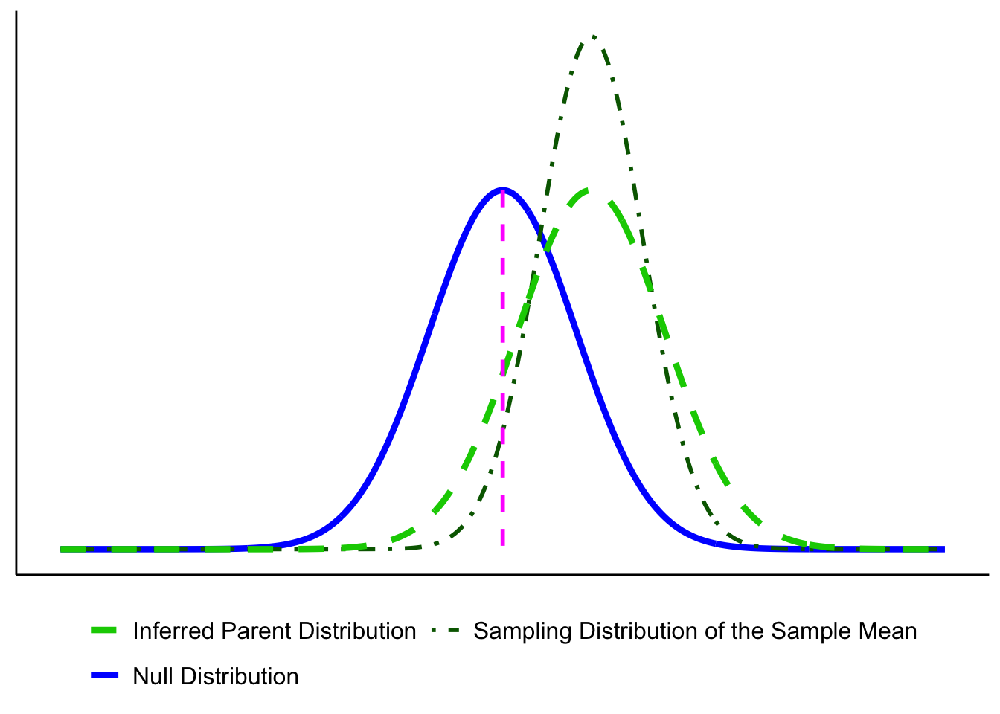
- Fail to Reject the Null Hypothesis: The sample mean supports the alternate hypothesis (it is on the appropriate side of the rejection region), but the sample size is too small. The sample mean is only about 1SE from the null mean, making it too close to be significant. Hypothetical situation: With more data and the same sample mean, could our conclusion differ?
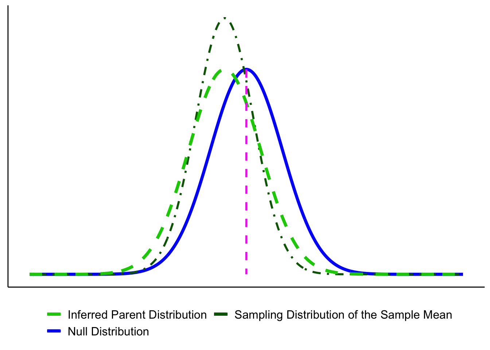
- Reject the Null Hypothesis: The sample mean is on the appropriate side of the rejection region. It’s significantly distant from the null mean, over 3 SE, which is typically considered significant for most standard values of α.
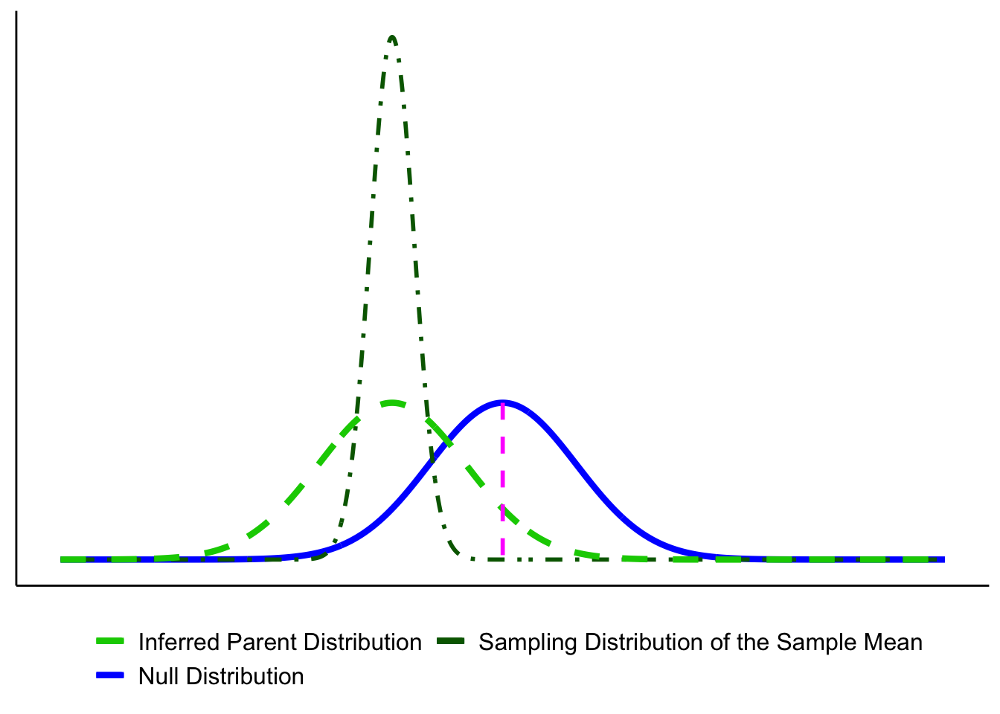
- Reject the Null Hypothesis (Two-Tailed Test): Reject the null hypothesis for the same reasons as the previous example. This case is two-tailed, but nothing else has changed.
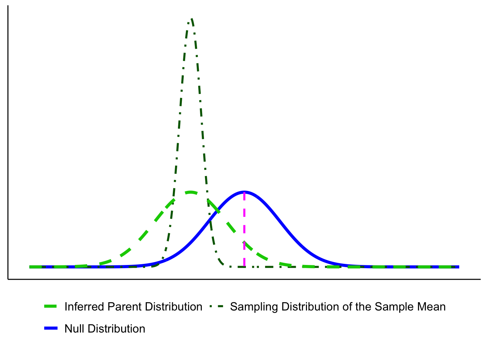
6.4 Graphical Review of Sample Size Effect when Test Outcomes are in Error
It’s a given that we never truly grasp the actual parent distribution of a sample. An unrepresentative sample can lead either to a Type I or a Type II error. The term sampling error is sometimes invoked to depict such unrepresentative samples, but it’s imperative to understand that the researcher hasn’t committed any mistakes.
6.4.1 Graphical Descriptions:
Type I Error: Here, the green curves depict the sampling distribution (dark green) and the apparent parent distribution (lighter green) of our sample. But in reality, the sample is a product of the null distribution (blue). Question to ponder: How would the representation look if we had utilized a smaller sample size?
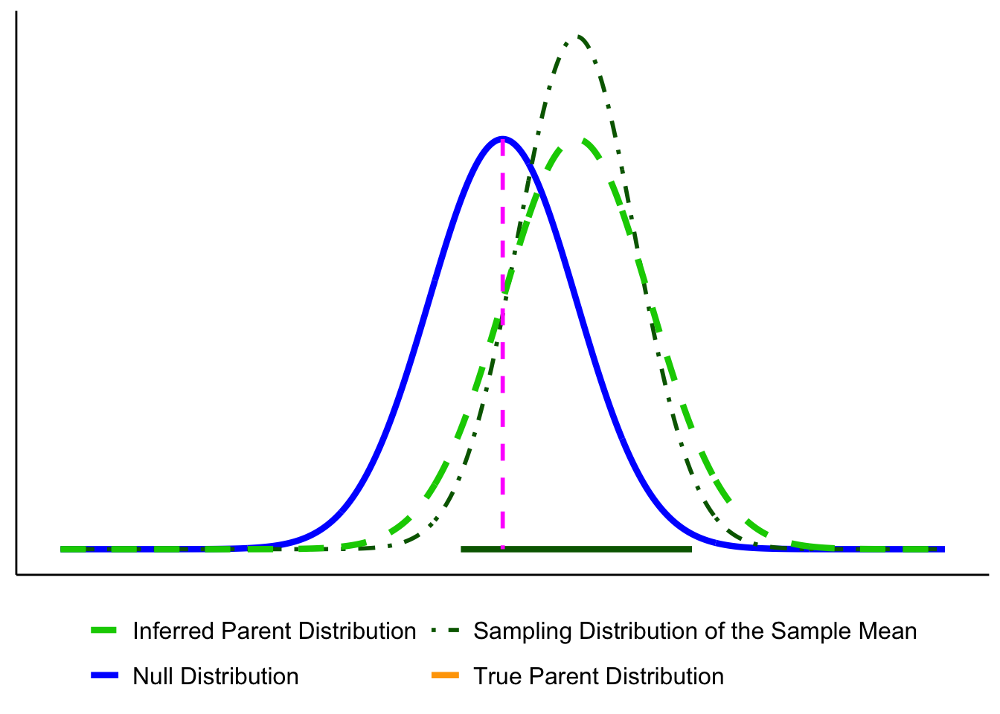
The main thing that would change with a larger sample size is that the sampling distribution of sample means becomes much tighter, thus making the confidence interval smaller. So here, are we more or less likely to have a type 1 error with the larger sample size?
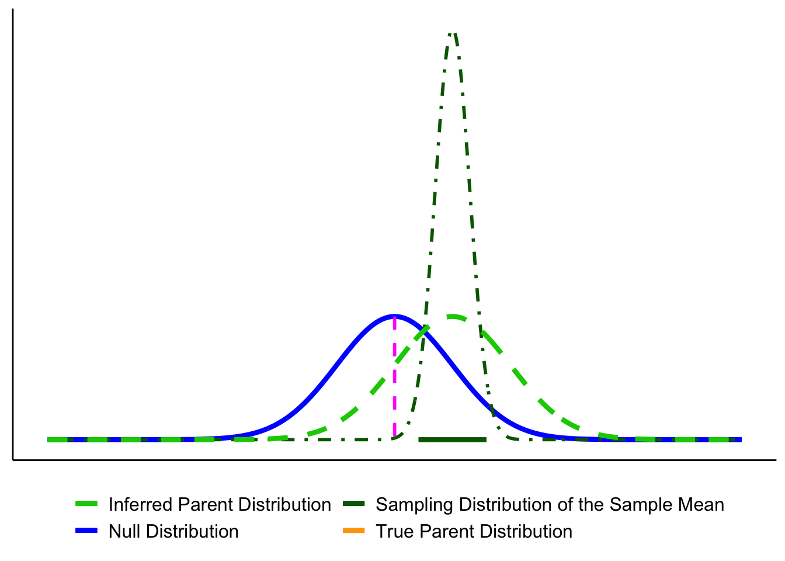
Type II Error: The sample genuinely hails from the solid orange parent population. However, it was misleading enough (as depicted by the dashed green line) to seem analogous to the null distribution (blue). Query to reflect upon: How would this representation transform if the sample size was substantially larger?
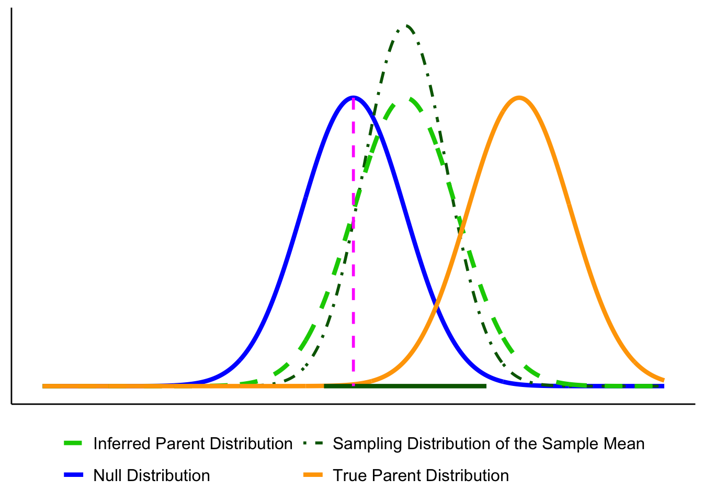
The main thing that would change with a larger sample size is that the sampling distribution of sample means becomes much tighter, thus making the confidence interval smaller. So here, are we more or less likely to have a type 2 error with the larger sample size?
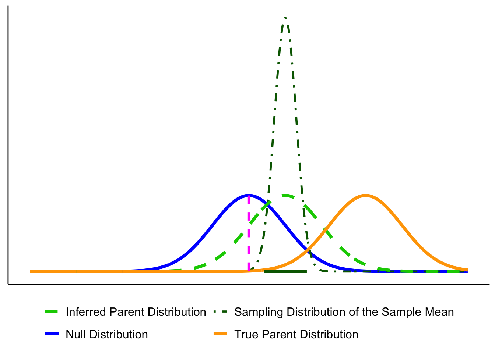
6.4.2 How Significant is ‘Significant’ – Interpreting p-values
When we use a rejection region to test a hypothesis, we get a yes-or-no answer. For a two-tailed test, if we ask whether the confidence interval “captures” the null mean, we get a yes-or-no answer as well.
6.4.2.1 Calculating p-values
We can do better – we can get an actual probability value. The blue box for the z-test tells us how to calculate our p-value if our mean is in the area of interest for the test.
Calculate Z-value: First, we calculate how many standard errors our mean is from the null mean. This is the z-value for our mean in the world of the null hypothesis.
- For (H0 < X), we ask about the upper tail probability of our mean.
- For (H0 > X), we ask about the lower tail probability of our mean.
- For (H0 = X), we calculate twice the tail probability.
6.4.2.2 One-Tailed vs Two-Tailed Tests
One-Tailed Test: The p-value tells us the probability of a mean at least as much greater than (H0) as our mean, when the null hypothesis is true or as much less than (H0).
Two-Tailed Test: The p-value tells us the probability of a mean at least as different from (H0) as our mean, when the null hypothesis is true.
6.4.2.3 Rejecting the Null Hypothesis
We reject (H0) when (p)-value (< ). At that point, our data are too unusual when the null hypothesis is true for us to believe that the null hypothesis is true.
- Small p-value: When (p) is small, our data provide weak support for (H0), and we are more sure that (H0) is not true, and that (Ha) is more likely.
6.5 Review of Ways to Test (H0)
Confidence Interval: If the alternative is two-tailed, build a 1-() confidence interval. If the CI catches (H0) then fail to reject.
Test Statistic: Calculate the test statistic and compare to the rejection region of size (). If the test statistic is in the rejection region, reject (H0).
Probability: Determine the probability of your test statistic. If (p < ) then reject (H0).
Note: The first two methods give you a yes-or-no answer. The third method gives you some additional information.
6.5.1 Results Statement
Now that we have started doing statistical tests, we have also started to think about results. A results statement provides an English language version of what we discovered, as well as the statistical results. For a z-test, a results sentence might say:
The average level of mercury in the ponds within 10 km of the smelter is significantly higher than the legal limit (z = 2.85, n = 32, p = 0.004).
The information in the parentheses, for a one-sample test, is, in this order,
- the value of the test statistic, in this case, (z);
- the sample size or degrees of freedom; and
- the probability of the test statistic when the null hypothesis is true.
Most problems that include a test will require a results sentence.
6.5.2 Beyond the 0.5 cutoff: Effect-size and power
You’ve probably heard me mention that the 0.5 cutoff for statistical significance is somewhat arbitrary. So, what’s the alternative? Enter effect size and statistical power. These aren’t just buzzwords; they’re foundational elements for conducting meaningful environmental research. Many scientific journals even have guidelines on how to report them. Ideally, you should be thinking about these factors before you collect your first data point. Given their importance, it’s time we delve into what these concepts really mean and why they’re crucial for research.
6.5.3 The importance of knowing what you’re doing
Effect size and power analyses are more than just boxes to tick; they’re essential tools in your research toolkit for understanding environmental data. Rather than using them simply because you were advised to, see them as integral to designing meaningful studies. These tools help you filter out statistical “noise,” revealing actionable insights that can address real-world environmental issues. They shouldn’t be applied blindly but should be part of a thoughtful research strategy aimed at making your data work for you.
6.5.4 Chance vs. Real Effects: The Playground, the Superpower, and the Impact Scale
In environmental research, the goal is often to identify meaningful changes—like the improvement of air quality due to reduced pollution. However, researchers sometimes find themselves grappling with statistical “noise” rather than detecting genuine effects. To navigate this complex landscape, let’s use some analogies.
The Playground and the Mischievous Kid
First, consider your sample size as a playground and chance as a mischievous kid running around in it. The smaller the playground, the more room this kid has to create chaos, leading to random variations in your data. On the flip side, a larger playground restricts the kid’s antics, minimizing the influence of chance. So, your first task is to design your study like an ultimate playground—spacious and well-planned to keep chance at bay.
The Balls: Different Sizes, Different Impacts
Next, let’s focus on the “stuff” being thrown around on this playground. Think of different types of balls—soccer balls, tennis balls, ping pong balls, and marbles—as representing different effect sizes:
Soccer Ball (Strong Effect): It’s big and noticeable. When it lands, you know something significant has happened.
Tennis Ball (Medium Effect): Still impactful but not as game-changing as a soccer ball.
Ping Pong Ball (Small Effect): It might bounce around, but it’s not going to change the landscape.
Marble (Very Small Effect): Almost negligible amid the other activities.
The Superhero: Statistical Power
Here’s where statistical power comes into play. It’s your research superhero, capable of discerning whether the changes you’re observing are due to chance, the size of your playground, or the type of ball being thrown (Effect Size). Imagine it as a keen-eyed playground supervisor who can tell the difference between a random bounce and a meaningful impact.
The Takeaway
Plan Well: Design your study like you’re building the ultimate playground—spacious and well-planned to minimize the role of chance.
Know Your Ball: Understand the potential impact (effect size) of what you’re introducing into your study. This helps you make meaningful conclusions.
Power Up: Conduct a power analysis to ensure your study is equipped to distinguish between meaningful impacts and random noise.
By focusing on these three elements—chance, effect size, and statistical power—you’re not just adhering to research best practices; you’re elevating the quality and impact of your work.
6.5.5 Effect size: concrete vs. abstract notions
Generally speaking, the big concept of effect size, is simply how big the differences are, that’s it. However, the biggness or smallness of effects quickly becomes a little bit complicated. On the one hand, the raw difference in the means can be very meaningful. Let’s say we are measuring performance on a final exam, and we are testing whether or not a miracle drug can make you do better on the test. Let’s say taking the drug makes you do 5% better on the test, compared to not taking the drug. You know what 5% means, that’s basically a whole letter grade. Pretty good. An effect-size of 25% would be even better, right? Lots of measures have a concrete quality to them, and we often want to the size of the effect expressed in terms of the original measure.
Let’s talk about concrete measures some more. How about learning a musical instrument. Let’s say it takes 10,000 hours to become an expert piano, violin, or guitar player. And, let’s say you found something online that says that using their method, you will learn the instrument in less time than normal. That is a claim about the effect size of their method. You would want to know how big the effect is right? For example, the effect-size could be 10 hours. That would mean it would take you 9,980 hours to become an expert (that’s a whole 10 hours less). If I knew the effect-size was so tiny, I wouldn’t bother with their new method. But, if the effect size was say 1,000 hours, that’s a pretty big deal, that’s 10% less (still doesn’t seem like much, but saving 1,000 hours seems like a lot).
In environmental science, we often encounter measures that are not as straightforward as, say, temperature or pH levels. Take biodiversity indices as an example. These indices can give us a numerical value representing the variety of life in a particular ecosystem, but interpreting what these numbers mean can be challenging.
Imagine you’re assessing the impact of a reforestation project. Your biodiversity index might read 3 before the project and 4 after. That’s a difference of only 1 unit, but what does that actually signify? Is it a significant improvement, or just a minor change? The raw numbers alone don’t provide enough context.
To make these abstract measures more interpretable, we often turn to standardized metrics, like z-scores. If that 1-unit difference in biodiversity corresponds to a shift of one standard deviation, that’s a substantial change worth noting. On the other hand, if the shift is only 0.1 in terms of standard deviation, then the 11-unit difference might not be as impactful as it first seemed. Standardized measures like Cohen’s d can further help us understand the practical significance of our findings.
6.5.6 Cohen’s d
Let’s look a few distributions to firm up some ideas about effect-size. Figure fig-5.5effectdists has four panels. The first panel (0) represents the null distribution of no differences. This is the idea that your manipulation (A vs. B) doesn’t do anything at all, as a result when you measure scores in conditions A and B, you are effectively sampling scores from the very same overall distribution. The panel shows the distribution as green for condition B, but the red one for condition A is identical and drawn underneath (it’s invisible). There is 0 difference between these distributions, so it represent a null effect.
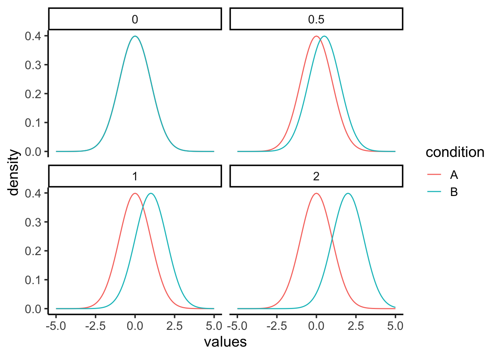
The remaining panels are hypothetical examples of what a true effect could look like, when your manipulation actually causes a difference. For example, if condition A is a control group, and condition B is a treatment group, we are looking at three cases where the treatment manipulation causes a positive shift in the mean of distribution. We are using normal curves with mean =0 and sd =1 for this demonstration, so a shift of .5 is a shift of half of a standard deviation. A shift of 1 is a shift of 1 standard deviation, and a shift of 2 is a shift of 2 standard deviations. We could draw many more examples showing even bigger shifts, or shifts that go in the other direction.
Let’s look at another example, but this time we’ll use some concrete measurements. Let’s say we are looking at final exam performance, so our numbers are grade percentages. Let’s also say that we know the mean on the test is 65%, with a standard deviation of 5%. Group A could be a control that just takes the test, Group B could receive some “educational” manipulation designed to improve the test score. These graphs then show us some hypotheses about what the manipulation may or may not be doing.
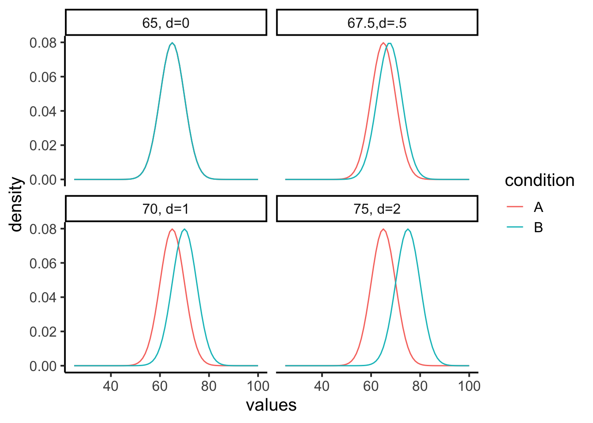
The first panel shows that both condition A and B will sample test scores from the same distribution (mean =65, with 0 effect). The other panels show shifted mean for condition B (the treatment that is supposed to increase test performance). So, the treatment could increase the test performance by 2.5% (mean 67.5, .5 sd shift), or by 5% (mean 70, 1 sd shift), or by 10% (mean 75%, 2 sd shift), or by any other amount. In terms of our previous metaphor, a shift of 2 standard deviations is more like jack-hammer in terms of size, and a shift of .5 standard deviations is more like using a pencil. The thing about research, is we often have no clue about whether our manipulation will produce a big or small effect, that’s why we are conducting the research.
You might have noticed that the letter \(d\) appears in the above figure. Why is that? Jacob Cohen (Cohen 1988) used the letter \(d\) in defining the effect-size for this situation, and now everyone calls it Cohen’s \(d\). The formula for Cohen’s \(d\) is:
\(d = \frac{\text{mean for condition 1} - \text{mean for condition 2}}{\text{population standard deviation}}\)
If you notice, this is just a kind of z-score. It is a way to standardize the mean difference in terms of the population standard deviation.
It is also worth noting again that this measure of effect-size is entirely hypothetical for most purposes. In general, researchers do not know the population standard deviation, they can only guess at it, or estimate it from the sample. The same goes for means, in the formula these are hypothetical mean differences in two population distributions. In practice, researchers do not know these values, they guess at them from their samples.
Before discussing why the concept of effect-size can be useful, we note that Cohen’s \(d\) is useful for understanding abstract measures. For example, when you don’t know what a difference of 10 or 20 means as a raw score, you can standardize the difference by the sample standard deviation, then you know roughly how big the effect is in terms of standard units. If you thought a 20 was big, but it turned out to be only 1/10th of a standard deviation, then you would know the effect is actually quite small with respect to the overall variability in the data.
6.6 Power
When there is a true effect out there to measure, you want to make sure your design is sensitive enough to detect the effect, otherwise what’s the point. We’ve already talked about the idea that an effect can have different sizes. The next idea is that your design can be more less sensitive in its ability to reliabily measure the effect. We have discussed this general idea many times already in the textbook, for example we know that we will be more likely to detect “significant” effects (when there are real differences) when we increase our sample-size. Here, we will talk about the idea of design sensitivity in terms of the concept of power. Interestingly, the concept of power is a somewhat limited concept, in that it only exists as a concept within some philosophies of statistics.
6.6.1 A digresssion about hypothesis testing
In particular, the concept of power falls out of the Neyman-Pearson concept of null vs. alternative hypothesis testing. Neyman-Pearson ideas are by now the most common and widespread, and in the opinion of some of us, they are also the most widely misunderstood and abused idea.
What we have been mainly doing is talking about hypothesis testing from the Fisherian (Sir Ronald Fisher, the ANOVA guy) perspective. This is a basic perspective that can’t be easily ignored. It is also quite limited. The basic idea is this:
- We know that chance can cause some differences when we measure something between experimental conditions.
- We want to rule out the possibility that the difference that we observed can not be due to chance
- We construct large N designs that permit us to do this when a real effect is observed, such that we can confidently say that big differences that we find are so big (well outside the chance window) that it is highly implausible that chance alone could have produced.
- The final conclusion is that chance was extremely unlikely to have produced the differences. We then infer that something else, like the manipulation, must have caused the difference.
- We don’t say anything else about the something else.
- We either reject the null distribution as an explanation (that chance couldn’t have done it), or retain the null (admit that chance could have done it, and if it did we couldn’t tell the difference between what we found and what chance could do)
Neyman and Pearson introduced one more idea to this mix, the idea of an alternative hypothesis. The alternative hypothesis is the idea that if there is a true effect, then the data sampled into each condition of the experiment must have come from two different distributions. Remember, when there is no effect we assume all of the data cam from the same distribution (which by definition can’t produce true differences in the long run, because all of the numbers are coming from the same distribution). The graphs of effect-sizes from before show examples of these alternative distributions, with samples for condition A coming from one distribution, and samples from condition B coming from a shifted distribution with a different mean.
So, under the Neyman-Pearson tradition, when a researcher find a signifcant effect they do more than one things. First, they reject the null-hypothesis of no differences, and they accept the alternative hypothesis that there was differences. This seems like a sensible thing to do. And, because the researcher is actually interested in the properties of the real effect, they might be interested in learning more about the actual alternative hypothesis, that is they might want to know if their data come from two different distributions that were separated by some amount…in other words, they would want to know the size of the effect that they were measuring.
6.6.2 Back to power
We have now discussed enough ideas to formalize the concept of statistical power. For this concept to exist we need to do a couple things.
- Agree to set an alpha criterion. When the p-value for our test-statistic is below this value we will call our finding statistically significant, and agree to reject the null hypothesis and accept the “alternative” hypothesis (sidenote, usually it isn’t very clear which specific alternative hypothesis was accepted)
- In advance of conducting the study, figure out what kinds of effect-sizes our design is capable of detecting with particular probabilites.
The power of a study is determined by the relationship between
- The sample-size of the study
- The effect-size of the manipulation
- The alpha value set by the researcher.
To see this in practice let’s do a simulation. We will do a t-test on a between-groups design 10 subjects in each group. Group A will be a control group with scores sampled from a normal distribution with mean of 10, and standard deviation of 5. Group B will be a treatment group, we will say the treatment has an effect-size of Cohen’s \(d\) = .5, that’s a standard deviation shift of .5, so the scores with come from a normal distribution with mean =12.5 and standard deivation of 5. Remember 1 standard deviation here is 5, so half of a standard deviation is 2.5.
The following R script runs this simulated experiment 1000 times. We set the alpha criterion to .05, this means we will reject the null whenever the \(p\)-value is less than .05. With this specific design, how many times out of of 1000 do we reject the null, and accept the alternative hypothesis?
#> [1] 190The answer is that we reject the null, and accept the alternative 190 times out of 1000. In other words our experiment succesfully accepts the alternative hypothesis 19 percent of the time, this is known as the power of the study. Power is the probability that a design will succesfully detect an effect of a specific size.
Importantly, power is completely abstract idea that is completely determined by many assumptions including N, effect-size, and alpha. As a result, it is best not to think of power as a single number, but instead as a family of numbers.
For example, power is different when we change N. If we increase N, our samples will more precisely estimate the true distributions that they came from. Increasing N reduces sampling error, and shrinks the range of differences that can be produced by chance. Lets’ increase our N in this simulation from 10 to 20 in each group and see what happens.
#> [1] 334Now the number of significant experiments i 334 out of 1000, or a power of 33.4 percent. That’s roughly doubled from before. We have made the design more sensitive to the effect by increasing N.
We can change the power of the design by changing the alpha-value, which tells us how much evidence we need to reject the null. For example, if we set the alpha criterion to 0.01, then we will be more conservative, only rejecting the null when chance can produce the observed difference 1% of the time. In our example, this will have the effect of reducing power. Let’s keep N at 20, but reduce the alpha to 0.01 and see what happens:
#> [1] 133Now only 133 out of 1000 experiments are significant, that’s 13.3 power.
Finally, the power of the design depends on the actual size of the effect caused by the manipulation. In our example, we hypothesized that the effect caused a shift of .5 standard deviations. What if the effect causes a bigger shift? Say, a shift of 2 standard deviations. Let’s keep N= 20, and alpha < .01, but change the effect-size to two standard deviations. When the effect in the real-world is bigger, it should be easier to measure, so our power will increase.
#> [1] 1000Neat, if the effect-size is actually huge (2 standard deviation shift), then we have power 100 percent to detect the true effect.
6.6.3 Power curves
We mentioned that it is best to think of power as a family of numbers, rather than as a single number. To elaborate on this consider the power curve below. This is the power curve for a specific design: a between groups experiments with two levels, that uses an independent samples t-test to test whether an observed difference is due to chance. Critically, N is set to 10 in each group, and alpha is set to .05
In Figure fig-5.5powercurve power (as a proportion, not a percentage) is plotted on the y-axis, and effect-size (Cohen’s d) in standard deviation units is plotted on the x-axis.
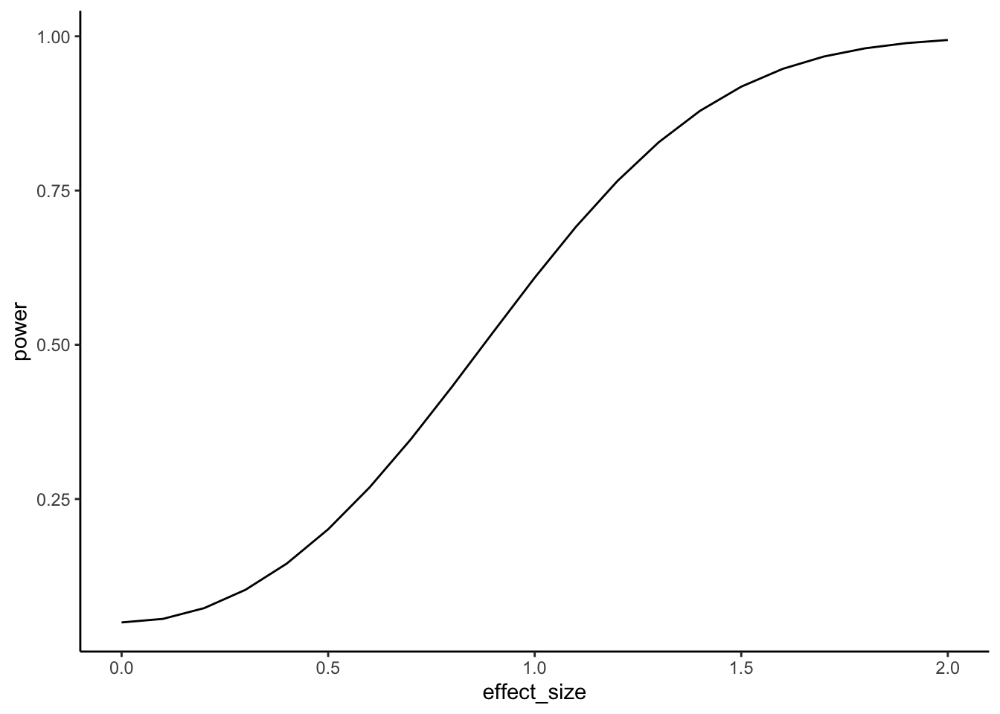
A power curve like this one is very helpful to understand the sensitivity of a particular design. For example, we can see that a between subjects design with N=10 in both groups, will detect an effect of d=.5 (half a standard deviation shift) about 20% of the time, will detect an effect of d=.8 about 50% of the time, and will detect an effect of d=2 about 100% of the time. All of the percentages reflect the power of the design, which is the percentage of times the design would be expected to find a \(p\) < 0.05.
Let’s imagine that based on prior research, the effect you are interested in measuring is fairly small, d=0.2. If you want to run an experiment that will detect an effect of this size a large percentage of the time, how many subjects do you need to have in each group? We know from the above graph that with N=10, power is very low to detect an effect of d=0.2. Let’s make Figure fig-5.5powercurveN and vary the number of subjects rather than the size of the effect.

The figure plots power to detect an effect of d=0.2, as a function of N. The green line shows where power = .8, or 80%. It looks like we would nee about 380 subjects in each group to measure an effect of d=0.2, with power = .8. This means that 80% of our experiments would succesfully show p < 0.05. Often times power of 80% is recommended as a reasonable level of power, however even when your design has power = 80%, your experiment will still fail to find an effect (associated with that level of power) 20% of the time!
6.7 Planning your design
Our discussion of effect size and power highlight the importance of the understanding the statistical limitations of an experimental design. In particular, we have seen the relationship between:
- Sample-size
- Effect-size
- Alpha criterion
- Power
As a general rule of thumb, small N designs can only reliably detect very large effects, whereas large N designs can reliably detect much smaller effects. As a researcher, it is your responsibility to plan your design accordingly so that it is capable of reliably detecting the kinds of effects it is intended to measure.
6.8 Some considerations
6.8.1 Low powered studies
Consider the following case. A researcher runs a study to detect an effect of interest. There is good reason, from prior research, to believe the effect-size is d=0.5. The researcher uses a design that has 30% power to detect the effect. They run the experiment and find a significant p-value, (p<.05). They conclude their manipulation worked, because it was unlikely that their result could have been caused by chance. How would you interpret the results of a study like this? Would you agree with thte researchers that the manipulation likely caused the difference? Would you be skeptical of the result?
The situation above requires thinking about two kinds of probabilities. On the one hand we know that the result observed by the researchers does not occur often by chance (p is less than 0.05). At the same time, we know that the design was underpowered, it only detects results of the expected size 30% of the time. We are face with wondering what kind of luck was driving the difference. The researchers could have gotten unlucky, and the difference really could be due to chance. In this case, they would be making a type I error (saying the result is real when it isn’t). If the result was not due to chance, then they would also be lucky, as their design only detects this effect 30% of the time.
Perhaps another way to look at this situation is in terms of the replicability of the result. Replicability refers to whether or not the findings of the study would be the same if the experiment was repeated. Because we know that power is low here (only 30%), we would expect that most replications of this experiment would not find a significant effect. Instead, the experiment would be expected to replicate only 30% of the time.
6.8.2 Large N and small effects
Perhaps you have noticed that there is an intriguing relationship between N (sample-size) and power and effect-size. As N increases, so does power to detect an effect of a particular size. Additionally, as N increases, a design is capable of detecting smaller and smaller effects with greater and greater power. For example, if N was large enough, we would have high power to detect very small effects, say d= 0.01, or even d=0.001. Let’s think about what this means.
Imagine a drug company told you that they ran an experiment with 1 billion people to test whether their drug causes a significant change in headache pain. Let’s say they found a significant effect (with power =100%), but the effect was very small, it turns out the drug reduces headache pain by less than 1%, let’s say 0.01%. For our imaginary study we will also assume that this effect is very real, and not caused by chance.
Clearly the design had enough power to detect the effect, and the effect was there, so the design did detect the effect. However, the issue is that there is little practical value to this effect. Nobody is going to by a drug to reduce their headache pain by 0.01%, even if it was “scientifcally proven” to work. This example brings up two issues. First, increasing N to very large levels will allow designs to detect almost any effect (even very tiny ones) with very high power. Second, sometimes effects are meaningless when they are very small, especially in applied research such as drug studies.
These two issues can lead to interesting suggestions. For example, someone might claim that large N studies aren’t very useful, because they can always detect really tiny effects that are practically meaningless. On the other hand, large N studies will also detect larger effects too, and they will give a better estimate of the “true” effect in the population (because we know that larger samples do a better job of estimating population parameters). Additionally, although really small effects are often not interesting in the context of applied research, they can be very important in theoretical research. For example, one theory might predict that manipulating X should have no effect, but another theory might predict that X does have an effect, even if it is a small one. So, detecting a small effect can have theoretical implication that can help rule out false theories. Generally speaking, researchers asking both theoretical and applied questions should think about and establish guidelines for “meaningful” effect-sizes so that they can run designs of appropriate size to detect effects of “meaningful size”.
6.8.3 Small N and Large effects
All other things being equal would you trust the results from a study with small N or large N? This isn’t a trick question, but sometimes people tie themselves into a knot trying to answer it. We already know that large sample-sizes provide better estimates of the distributions the samples come from. As a result, we can safely conclude that we should trust the data from large N studies more than small N studies.
At the same time, you might try to convince yourself otherwise. For example, you know that large N studies can detect very small effects that are practically and possibly even theoretically meaningless. You also know that that small N studies are only capable of reliably detecting very large effects. So, you might reason that a small N study is better than a large N study because if a small N study detects an effect, that effect must be big and meaningful; whereas, a large N study could easily detect an effect that is tiny and meaningless.
This line of thinking needs some improvement. First, just because a large N study can detect small effects, doesn’t mean that it only detects small effects. If the effect is large, a large N study will easily detect it. Large N studies have the power to detect a much wider range of effects, from small to large. Second, just because a small N study detected an effect, does not mean that the effect is real, or that the effect is large. For example, small N studies have more variability, so the estimate of the effect size will have more error. Also, there is 5% (or alpha rate) chance that the effect was spurious. Interestingly, there is a pernicious relationship between effect-size and type I error rate
6.8.4 Type I errors are convincing when N is small
So what is this pernicious relationship between Type I errors and effect-size? Mainly, this relationship is pernicious for small N studies. For example, the following figure illustrates the results of 1000s of simulated experiments, all assuming the null distribution. In other words, for all of these simulations there is no true effect, as the numbers are all sampled from an identical distribution (normal distribution with mean =0, and standard deviation =1). The true effect-size is 0 in all cases.
We know that under the null, researchers will find p values that are less 5% about 5% of the time, remember that is the definition. So, if a researcher happened to be in this situation (where there manipulation did absolutely nothing), they would make a type I error 5% of the time, or if they conducted 100 experiments, they would expect to find a significant result for 5 of them.
Figure fig-5.5effectsizeType1 reports the findings from only the type I errors, where the simulated study did produce p < 0.05. For each type I error, we calculated the exact p-value, as well as the effect-size (cohen’s D) (mean difference divided by standard deviation). We already know that the true effect-size is zero, however take a look at this graph, and pay close attention to the smaller sample-sizes.
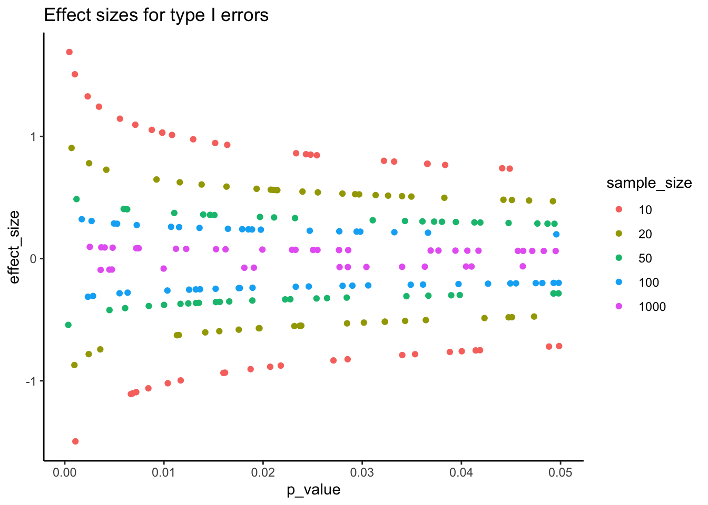
For example, look at the red dots, when sample size is 10. Here we see that the effect-sizes are quite large. When p is near 0.05 the effect-size is around .8, and it goes up and up as when p gets smaller and smaller. What does this mean? It means that when you get unlucky with a small N design, and your manipulation does not work, but you by chance find a “significant” effect, the effect-size measurement will show you a “big effect”. This is the pernicious aspect. When you make a type I error for small N, your data will make you think there is no way it could be a type I error because the effect is just so big!. Notice that when N is very large, like 1000, the measure of effect-size approaches 0 (which is the true effect-size in the simulation shown in Figure fig-5.5cohensD).
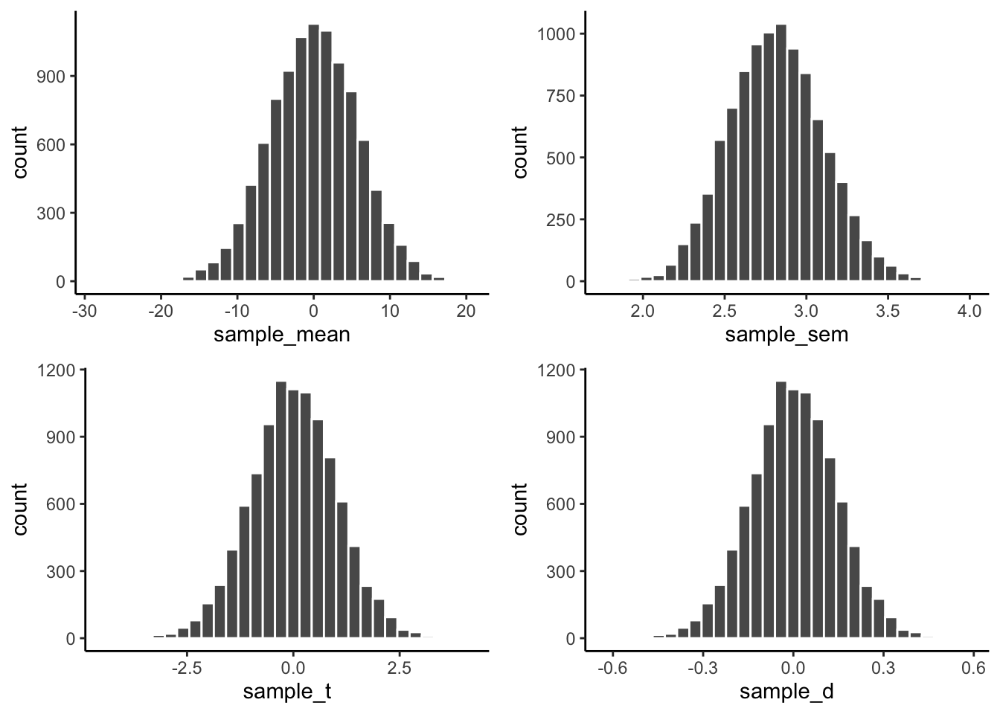
Barnes, Mallory L. 2023. Statistics for Environmental Science.
Cohen, J. 1988. Statistical Power Analysis for the Behavioral Sciences. Second. Lawrence Erlbaum.